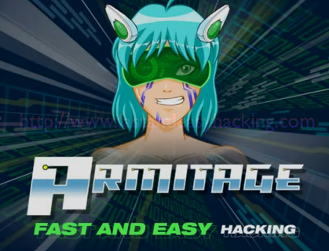
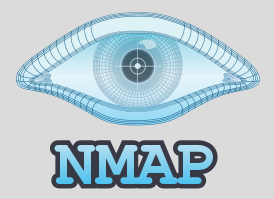
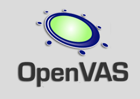
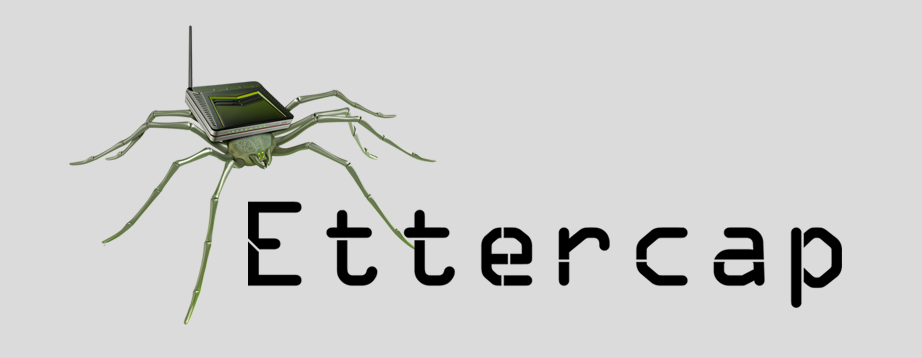
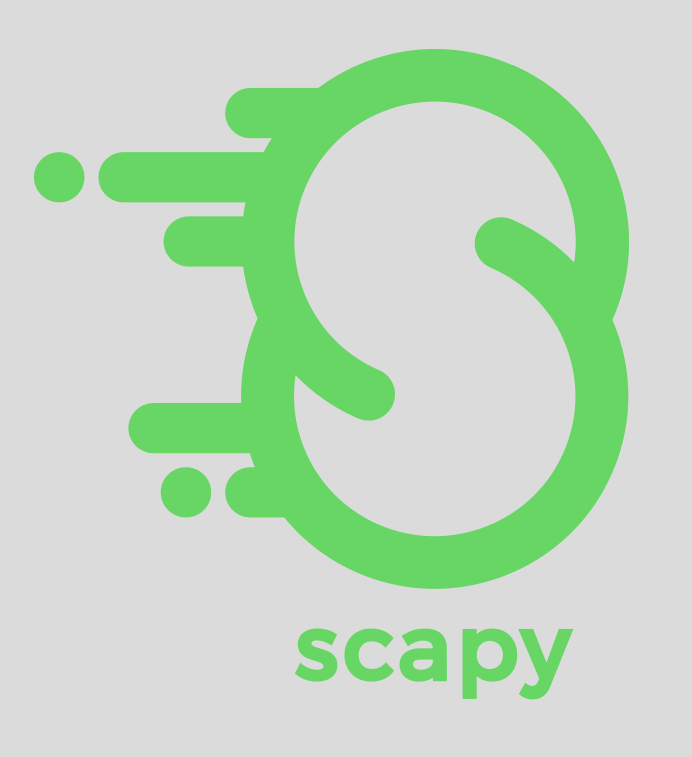
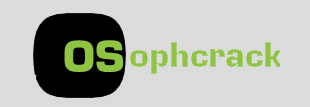
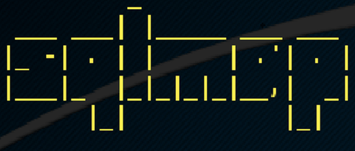
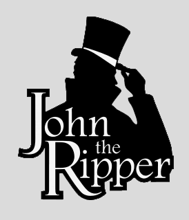

Back Box
Ferramentas
Metasploit
Conhecimento é poder, especialmente quando é compartilhado. Uma colaboração entre a comunidade de código aberto e o Rapid7, o Metasploit ajuda as equipes de segurança a fazer mais do que apenas verificar vulnerabilidades, gerenciar avaliações de segurança e melhorar a conscientização de segurança; ele capacita e arma defensores para sempre ficar um passo (ou dois) à frente do jogo.

Armitage
É uma ferramenta gráfica de gerenciamento de ataques cibernéticos para o Projeto Metasploit que visualiza alvos e recomenda explorações. É uma ferramenta de segurança de rede gratuita e de código aberto notável por suas contribuições para a colaboração em equipe, permitindo: sessões compartilhadas, dados e comunicação através de uma única instância do Metasploit.
Nmap
É um software livre que realiza port scan desenvolvido pelo Gordon Lyon, autoproclamado hacker "Fyodor". É muito utilizado para avaliar a segurança dos computadores, e para descobrir serviços ou servidores em uma rede de computadores.
OpenVAS
É uma estrutura de vários serviços e ferramentas que oferece uma solução abrangente e poderosa de varredura de vulnerabilidades e gerenciamento de vulnerabilidades. O framework faz parte da solução de gerenciamento de vulnerabilidade comercial da Greenbone Networks , a partir da qual os desenvolvimentos são contribuídos para a comunidade Open Source desde 2009.
W3af
É um ataque de aplicativo da Web e estrutura de auditoria . O objetivo do projeto é criar uma estrutura para ajudá-lo a proteger seus aplicativos da Web encontrando e explorando todas as vulnerabilidades de aplicativos da web.

Ettercap
É um conjunto abrangente para o homem nos ataques do meio. Ele apresenta sniffing de conexões ao vivo, filtragem de conteúdo em tempo real e muitos outros truques interessantes. Suporta a dissecação ativa e passiva de muitos protocolos e inclui muitos recursos para análise de rede e host.
Scapy
É um poderoso programa interativo de manipulação de pacotes. Ele é capaz de forjar ou decodificar pacotes de um grande número de protocolos, enviá-los na rede, capturá-los, corresponder solicitações e respostas e muito mais. Ele pode facilmente lidar com tarefas mais clássicas como varredura, tracerouting, sondagem, testes de unidade, ataques ou descoberta de rede.
Wireshark
É o analisador de protocolo de rede mais utilizado e amplamente utilizado no mundo. Ele permite que você veja o que está acontecendo em sua rede em um nível microscópico e é o padrão de fato em muitas empresas comerciais e sem fins lucrativos, agências governamentais e instituições educacionais.

Kismet
É um analisador de rede sniffer, e um sistema de detecção de intrusão para redes 802.11 wireless. Kismet pode trabalhar com as placas wireless no modo monitor, capturando pacotes em rede dos tipos: 802.11a, 802.11b e 802.11g. Funciona com os sistemas operecionais Linux, FreeBSD, NetBSD, OpenBSD, and Mac OS X. Existe um cliente para Windows, porem é necessário usar um servidor externo.

Aircrack
É um conjunto completo de ferramentas para avaliar a segurança da rede WiFi. Ele se concentra em diferentes áreas de segurança WiFi: Monitoramento Ataque Teste Craqueamento.

Ophcrack
É um cracker de senha livre do Windows baseado em tabelas de arco-íris. É uma implementação muito eficiente de tabelas de arco-íris feita pelos inventores do método. Ele vem com uma interface gráfica do usuário e é executado em várias plataformas.
Sqlmap
É uma ferramenta de teste de penetração de software livre que automatiza o processo de detecção e exploração de falhas de injeção de SQL e a invasão de servidores de banco de dados. Ele vem com um poderoso mecanismo de detecção, muitos recursos para o testador de penetração e uma ampla variedade de switches que duram desde a impressão digital do banco de dados até a busca de dados do banco de dados até o acesso ao sistema de arquivos subjacente e a execução de comandos no sistema operacional.
John the Ripper
É um software para quebra de senhas. O John the Ripper possui três modos de operação:Dicionário (Wordlist);Quebra Simples (Single Crack);Incremental;Externo (External).
